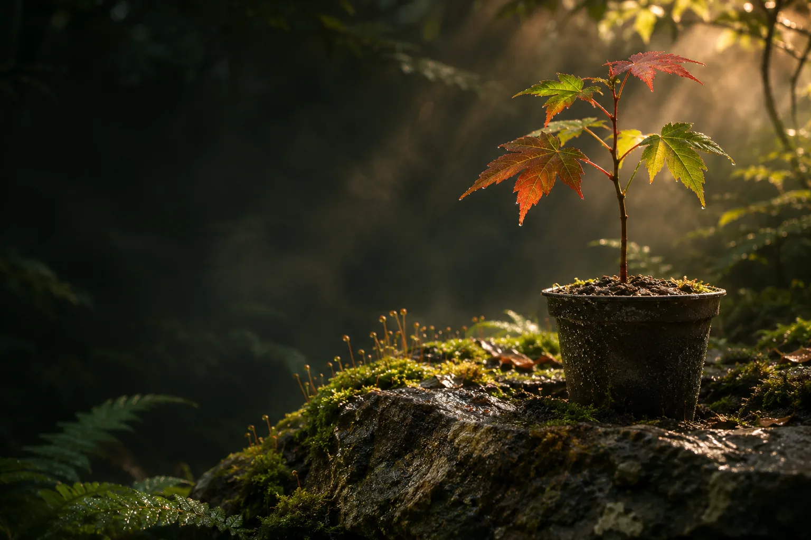

Time is
the medium.
Five trees raised from seed. A living atlas of time, patience, and the art of becoming.
Worlds
grown slowly.
Five surviving Acer rubrum seedlings, grown from seed in 2026. Small enough to hold in your hands, young enough that almost their entire story can still be documented.
The earliest
chapter.
One tiny red maple. An imagined root-over-rock composition. The actual tree has not yet been worked or mounted to stone.
Enter Specimen 01Not a finished
thing.
A becoming.
We are not collecting impressive endings. We are building the record of how living forms arise, change, and respond to deliberate care. The questions matter as much as the answers.
Our PracticeA different
kind of clock.
A timeline composed of real moments. Observed growth. Planned interventions. Completed work. These are never interchangeable.
Follow the first records15 November 2026 / First design direction
Design begins
with seeing.
The first investigation: finding a stone and an eventual root-over-rock language for Tree 01. A design studio for proposed futures, clearly separate from what has happened.

intervention.Study material / illustrative
Tree 01 / Study 001
A stone is not simply an object. It becomes the landscape against which a tree can grow.
Three compositional possibilities. No stone selected. No roots manipulated. All options remain experimental.
Enter the Atelier
An archive
in the making.
Photographic records will gradually replace illustrative scenes. An honest journal begins before its first spectacular photograph.
Time is the medium
The inaugural editorial record of five seed-grown trees and their future.